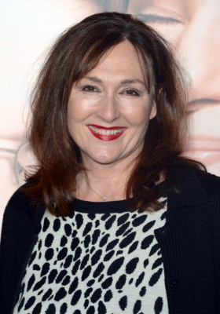

#7594 Heartbreakers - Achtung: Scharfe Kurven
Alternativ: Heartbreakers


 IMDB-Wertung: 6.2 / 10
IMDB-Wertung: 6.2 / 10  Metascore: 0
Metascore: 0 
Schön, sexy, charmant - Max ist eine Frau, die jeden Mann um den Verstand bringt. Sie heiratet regelmäßig stinkreiche Herren, die sich sofort danach unfreiwillig in sehr peinlichen Situationen wieder finden. Daraufhin reicht Max die Scheidung ein und macht sich mit einer fetten Abfindung aus dem Staub. Ihre nicht weniger sexy Komplizin heißt Page und ist ihre Tochter. Schon 14-mal hat die eiskalte Tour geklappt. Der Lohn für die lästige Heiraterei ist ein Leben in Luxus. Gefährlich wird's allerdings, wenn die Steuerbehörde plötzlich in der Tür steht. Und noch gefährlicher wird's, wenn geschieht was auf keinen Fall geschehen darf: Eine der Damen verliebt sich ernsthaft...
Jahr: 2001
Dauer: 123 Minuten
FSK: 12
Land: USA Studio: MGMTonspuren: DD5.1 - ,
Untertitel:
Auflösung: 1080p (1920x824) Größe: 10444 MB
Genre: Komödie, Krimi, Liebe
Regisseur: David Mirkin
Drehbuch: Robert Dunn
Soundtrack: Shawn Colvin, John Leventhal
Darsteller:
 Sigourney Weaver als Angela Nardino / Max Conners / Ulga Yevanova
Sigourney Weaver als Angela Nardino / Max Conners / Ulga Yevanova Jennifer Love Hewitt als Wendy / Page Conners / Jane Helstrom
Jennifer Love Hewitt als Wendy / Page Conners / Jane Helstrom Ray Liotta als Dean Cumanno / Vinny Staggliano
Ray Liotta als Dean Cumanno / Vinny Staggliano- Jason Lee als Jack Withrowe
 Anne Bancroft als Gloria Vogal / Barbara
Anne Bancroft als Gloria Vogal / Barbara Jeffrey Jones als Mr. Appel
Jeffrey Jones als Mr. Appel Gene Hackman als William B. Tensy
Gene Hackman als William B. Tensy-  Nora Dunn als Miss Madress
 Julio Oscar Mechoso als Leo
Julio Oscar Mechoso als Leo Ricky Jay als Dawson's Auctioneer
Ricky Jay als Dawson's Auctioneer Sarah Silverman als Linda
Sarah Silverman als Linda Zach Galifianakis als Bill
Zach Galifianakis als Bill Michael Hitchcock als Dr. Arnold Davis
Michael Hitchcock als Dr. Arnold Davis- Shawn Colvin als Minister at Second Wedding
 Carrie Fisher als Ms. Surpin
Carrie Fisher als Ms. Surpin Jack Shearer als Mr. Gruber
Jack Shearer als Mr. Gruber Alan Blumenfeld als Man in Gas Station
Alan Blumenfeld als Man in Gas Station Robert Alan Beuth als Maitre D'
Robert Alan Beuth als Maitre D' Kevin Nealon als Man at the Bar
Kevin Nealon als Man at the Bar- Scott Wordham als Parking Valet
- Jackie O'Brien als Woman in Dawson's
- Elya Baskin als Vladimir, Kremlin Waiter
- Oleg Shtefanko als Kremlin Band Leader
 Patricia Belcher als Hotel Housekeeping Maid
Patricia Belcher als Hotel Housekeeping Maid- Monnae Michaell als Bank Teller
- Bernadette Birkett als Jack's Mother
- David Mirkin als Jack's Lawyer
- Lawrence Sacco als Man at Banquet
- Richard Bernard als Kremlin Band Musician
- Johnny Bolton als Hotel Guest , uncredited
 Phil Hawn als Bank Customer , uncredited
Phil Hawn als Bank Customer , uncredited Ariane Von Kamp als Wedding Guest , uncredited
Ariane Von Kamp als Wedding Guest , uncredited- Jason Pattillo als The Glades Patron , uncredited
 T.J. Thyne als Bellhop , uncredited
T.J. Thyne als Bellhop , uncredited Stacey Travis als Nurse Gale Grey , uncredited
Stacey Travis als Nurse Gale Grey , uncredited- Todd Vittum als Bank Patron , uncredited
- Pierre Gonneau als Priest at First Wedding
- Michael Andrew als Wedding Band Leader
- Andy Brewster als Busboy
- Gonzo Raymond als Ray
- Adam Novicki als Waiter
- Steve Mellor als Philip Tinker
- Janni Brenn als Davis Mom
- Denalda Williams als Davis Maid
- Haresh Raval als Man in Auction
- Jack Douglas Cooper als Other Man at Auction
 Peter Spellos als Dawson's Workman
Peter Spellos als Dawson's Workman- Ken Magee als Police Sergeant
- Geremy Dingle als Breakers Waiter
- Catherine Butterfield als Bridal Shop Saleslady
Datei: X:\2001\Heartbreakers - Achtung Scharfe Kurven (2001, FSK12, 1920x824).mkv seit 22.11.2017
Festplatte: HD 1996-2002
 Es gibt insgesamt 102 Filme in der Gruppe '2001'
Es gibt insgesamt 102 Filme in der Gruppe '2001'